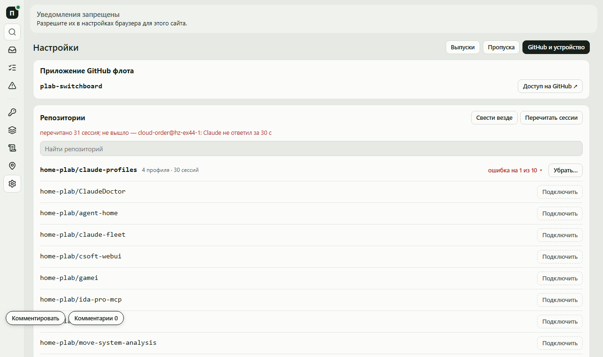
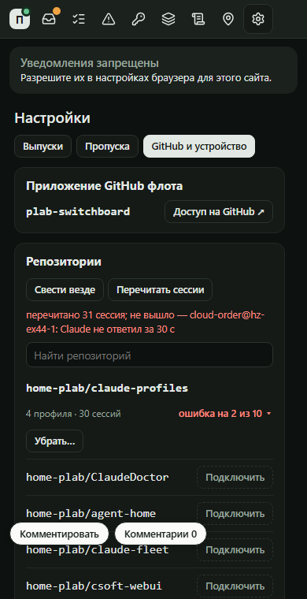

Сессия переживает обновление Host и правку профиля со старыми инструментами и скилами. Новая сборка обновляет инструменты модулей сама, одна кнопка перечитывает скилы и внешние серверы во всех живых сессиях флота.
Клик по любому элементу — пояснение. A — прочитал, Z — снять.


{ "type": "session.reload", "v": 1,
"callsign": "site@laptop" }
→ { "ok": true }
→ { "ok": false, "error": "sdk_error",
"why": "site@laptop: reloadPlugins —
Claude не ответил за 30 с" }
Работа: большая — меняет контракт Host: новый запрос.